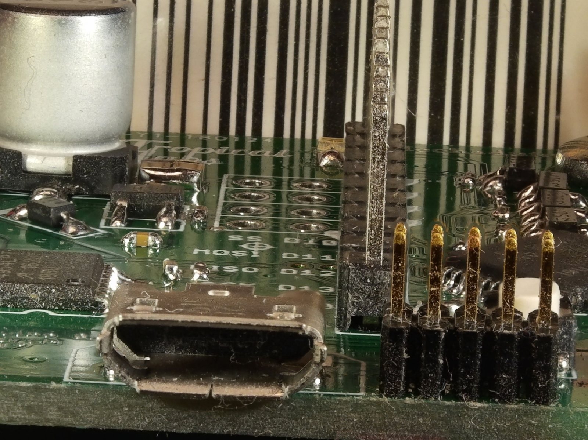
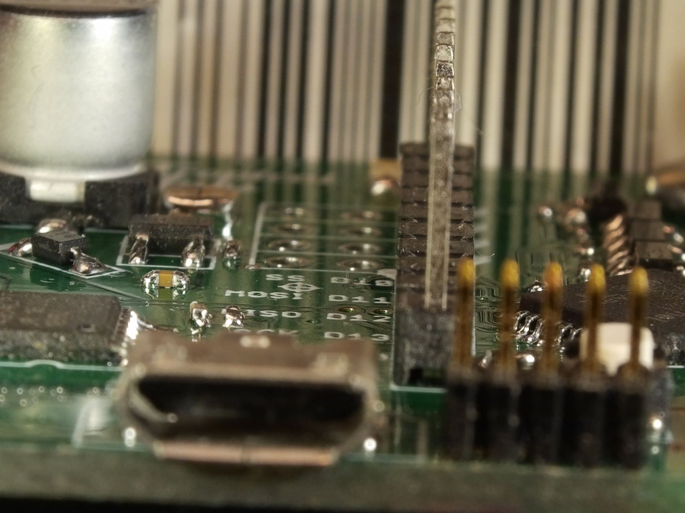
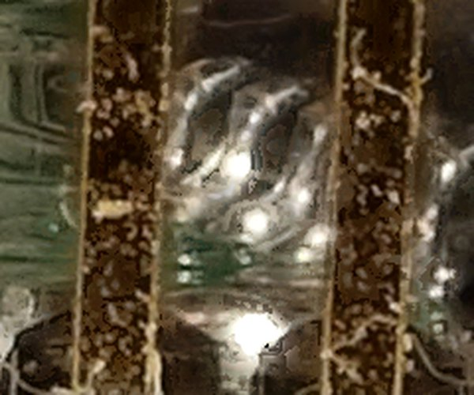
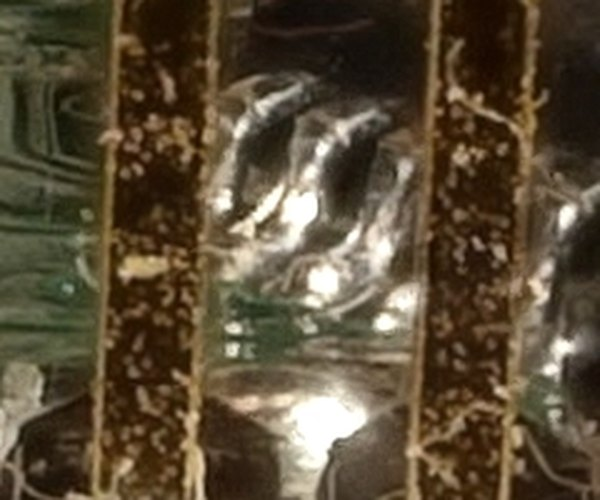
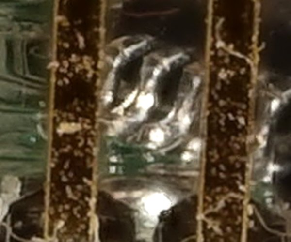
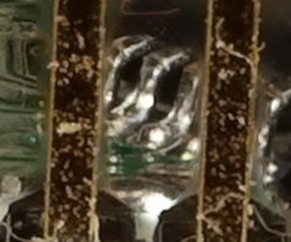

Focus stacking, shot and merged on your phone
MacroStack sweeps the focus through your subject in one fast burst, then aligns and merges the frames into a single photo that's sharp from front to back. No laptop needed.
Version 2.0.1 · Android 10 or newer · GPL-3.0


One frame Stacked: 7 framesDrag to compare. A 7-frame test stack from the focus-stack project (Petteri Aimonen, MIT), merged by MacroStack's engine with the Depth map method.
How it works
The same three steps a pro camera and desktop stacking software take, done by one app on the phone. The engine is written in Kotlin and runs natively on the phone's own processor.
Shoot
Set the nearest and farthest focus points and the number of frames. The app drives the focus motor through evenly spaced steps in one continuous burst, like a camera's focus bracketing: up to 21 frames per second on a Galaxy S24 Ultra.
Exposure and white balance stay locked for the whole stack. Focus peaking and a magnifier help you set the two points. Saves JPEG or RAW (DNG).
Align
Focusing changes the image scale slightly (focus breathing), and a hand-held phone shifts and tilts between frames. Every frame is measured against its neighbour and warped back into place, as precisely as desktop stacking software does it.
Brightness flicker from mains lighting is evened out too, so it can't show up as patches.
Stack
The engine works out, for every part of the picture, which frame had it in focus, and builds one photo from the sharpest parts. It runs in the background: you can keep shooting while it merges.
About 0.6–1 s per 12 MP frame on a recent phone. The original frames are kept for desktop software too.
Two ways to merge
The same two methods the best desktop stacking programs offer. Switch between them in the settings, or redo a stack with the other one.
Depth map
Builds a depth map of the subject and takes each spot from the frame where it was sharp. The default.
- Less noise than a single frame: flat, out-of-focus areas average many frames
- A subject that moved appears once, with a clean outline
- Smooth surfaces and clean edges
Pyramid
Splits every frame into layers of fine to coarse detail and keeps the strongest detail at every level, guided by a depth map so noise and glow don't win.
- Best for hairs, bristles and fine structures crossing each other
- Keeps more fine texture than the Depth map
- Uses about 300 MB however many frames you shoot
Tested in the open
Every version of the engine is benchmarked against two popular free desktop stackers, focus-stack and Shine Stacker, on the same stacks. Each result is checked block by block against the source frames. The scripts are in the repository, so anyone can rerun the test.




The same spot of the stack above, enlarged 2.5×.
| Test stack | MacroStack Depth map |
MacroStack Pyramid |
focus-stack 1.5 |
Shine Stacker Pyramid |
Shine Stacker Depth map |
|---|---|---|---|---|---|
| Circuit-board switch, 10 frames, big focus steps | 2.00.3 | 1.70.4 | 5.117.3 | 46.9*2.9 | 49.1*1.0 |
| Circuit-board pins, 7 frames (above) | 3.50.6 | 6.20.5 | 3.326.8 | 0.42.0 | 1.30.7 |
| Plants, hand-held phone, 23 frames | 0.70.1 | 2.40.4 | 1.45.0 | 0.02.4 | 1.40.1 |
| Fruits, hand-held phone, 30 frames | 6.90.0 | 0.00.0 | 0.02.3 | 1.12.8 | 4.30.5 |
| Keyboard, hand-held phone, 32 frames | 6.40.0 | 1.00.0 | 0.61.6 | 2.32.5 | 9.70.6 |
| Galaxy S24 Ultra stack, 20 frames | 10.70.0 | 0.20.1 | 0.013.4 | 0.514.1 | 2.54.5 |
| Pro macro, Canon R5 II, 50 frames | 26.10.0 | 8.90.2 | 24.450.0 | 98.9*0.0 | 98.9*0.0 |
* Shine Stacker's alignment skipped frames it couldn't match on these stacks (4 of 10 and 48 of 50), so its results there lack detail. Hand-held phone sweeps: Depth from Focus with Your Mobile Phone (Suwajanakorn, Hernández and Seitz, CVPR 2015). Pro macro: every 20th frame of a 999-frame stack by Johannes Sood (CC BY 4.0).
Where the others do better
focus-stack keeps the most fine texture: its wavelet merge lifts contrast beyond any single frame, which is also where its made-up detail comes from. Where Shine Stacker aligned every frame, its pyramid kept more fine contrast than ours, and its depth map was sharper on the phone stack. MacroStack's Depth map trades a little fine texture for less noise. Closing those gaps is what the next versions work on, with your stacks. Read the engine log.
Help make it better
The engine gets better by finding the stacks it gets wrong. Every stack you share is added to the test set, and every change is checked against all of them, so a fix for one subject can't quietly break another.
- Any camera or phone, around 10–50 frames, in shooting order
- The original files (JPEG, TIFF or RAW), not resized or edited
- Hard subjects are the most useful: hairs and bristles, shiny metal, dark edges on bright backgrounds, subjects that moved
- You're credited by name on this page and in the project. Your photos are only used for testing, and shown publicly only if you say so.
Credits
- Made by
- Bakkori, a macro photographer, with the help of Claude (Anthropic).
- Stacks shared by photographers
- Your name could be first here.
- Test stacks
- Petteri Aimonen (focus-stack examples, MIT) · Johannes Sood (Canon R5 II macro stack, CC BY 4.0) · Supasorn Suwajanakorn, Carlos Hernández and Steven M. Seitz (phone focus sweeps, CVPR 2015)
- Compared against
- focus-stack by Petteri Aimonen · Shine Stacker by Luca Lista